GitHub - li-plus/chatglm.cpp: C++ implementation of ChatGLM-6B & ChatGLM2-6B & more LLMs，这个项目咱不能说别的，只能说：牛逼、牛逼、牛逼……为啥这么说呢？天下武功，唯快不破。前面关于LLM的两篇（ChatGLM2-6B、Langchain-Chatchat 没别的意思，就是想让你点进去看看）你也看到了，两个的运行速度都不好意思说（当然这是咱机器的原因）。但是在他的加持下那速度是飕飕的！
再简单说一下和他的渊源：其实，先知道的是
这里在插播一下：目前国内开源的大模型也就那几个，除了上面提到的，还有百川、悟道·天鹰、中文LLaMA-2 & Alpaca-2、千问等。其中百川、悟道·天鹰、中文LLaMA-2 & Alpaca-2已经被
本笔记是ChatGLM2-6B - xiaodu114.github.io的后续，还是先根据这篇准备好环境吧！机器必须还是我的老朋友。
这是一个
选择这个的原因是电脑上已经有了宇宙第一的IDE。果然已经安装了，如下图：
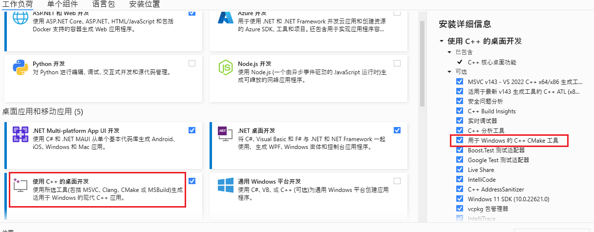
这里安装是安装了，但是不能任性的使用
添加的时候也遇到一个小问题：
之前使用的都是量化版：chatglm2-6b-int4。这里需要使用：chatglm2-6b。下载方式和之前的相同。
重点：【互链高科】下载【清华大学云盘】中没有的文件，两者合并，完美。
这里将下载的模型放到
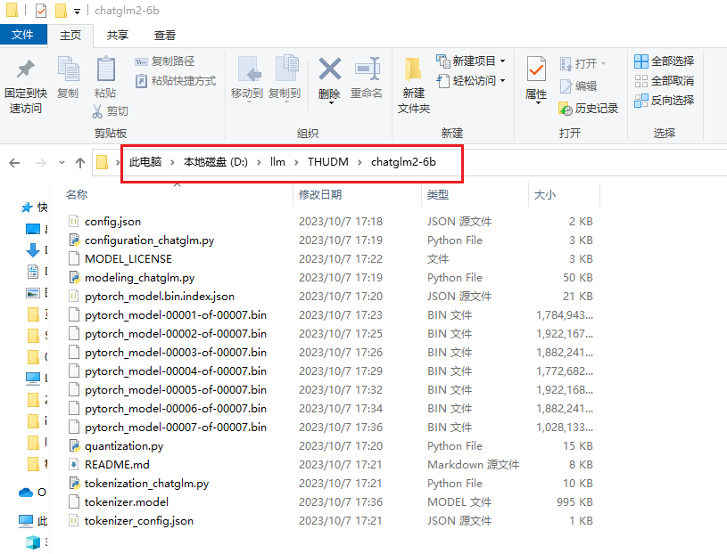
下载项目源码，官网推荐使用
# 你想把项目放到哪个目录下，在该目录下进入命令行
# --recursive 安装依赖
git clone --recursive https://github.com/li-plus/chatglm.cpp.git
这里将项目下载到
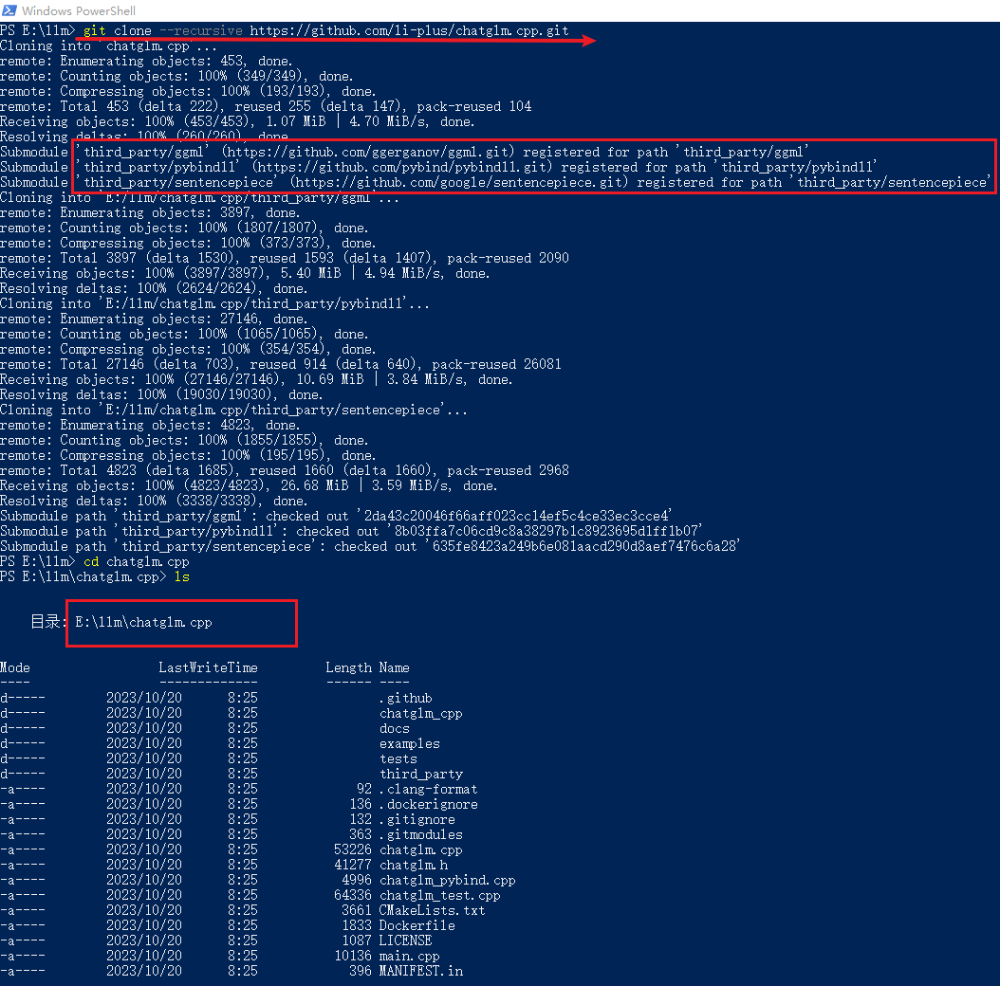
说明：这里的仓库是今天（2023-10-20）下载的。
注意：一定要看看依赖的三个类库中是否是空盒子。有一次弄啥的时候报错，发现这三个文件夹中是空的，不知道是不是网络的原因。之后重新克隆了一下就好了。
cmake -B build
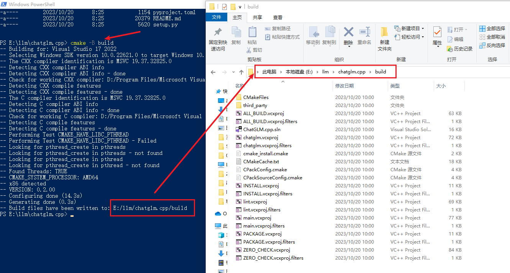
# 上面的命令 cmake -B build 成功之后，执行下面这个
cmake --build build -j --config Release
这个执行的时候有点胆战心惊啊！一大堆黄色的输出，简直就是刷屏了，我一度怀疑是不是要失败了，结果成功了，哈哈。您上眼：
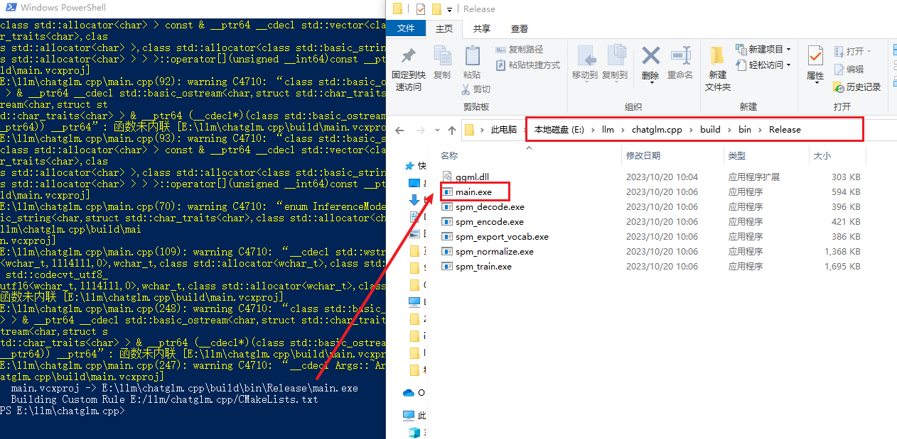
这里算是
# 创建虚拟环境
python -m venv venv
# 激活虚拟环境
.\venv\scripts\activate
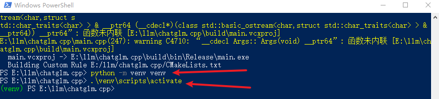
这里需要注意一下，按照官网的方式添加依赖，安装包的时候报错了，不知道是否和这边创建虚拟环境有关（人家官网也没有让你创建虚拟环境啊，静瞎搞，出错了吧！）。官方截图以及异常如下：
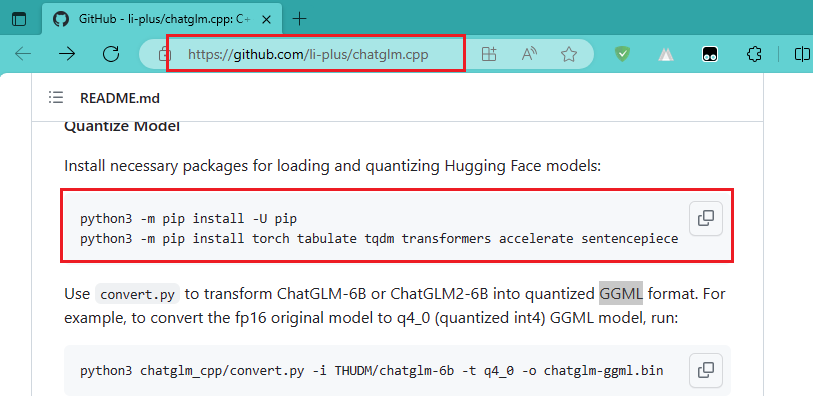
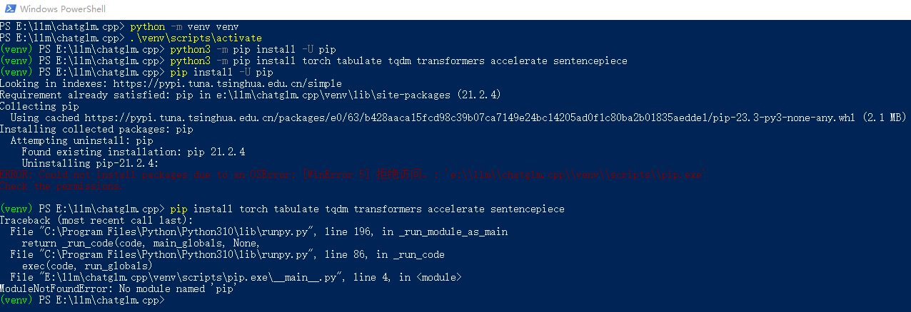
重新弄一个虚拟环境，再试试下面这个：
# 这次直接使用这个
pip install torch tabulate tqdm transformers accelerate sentencepiece
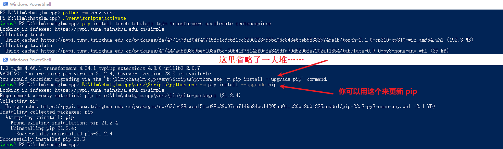
安装成功了，下面开始转换了，使用下面的命令：
python chatglm_cpp/convert.py -i D:\llm\THUDM\chatglm2-6b -t q4_0 -o E:\llm\chatglm.cpp\build\bin\Release\chatglm2-6b-ggml.bin
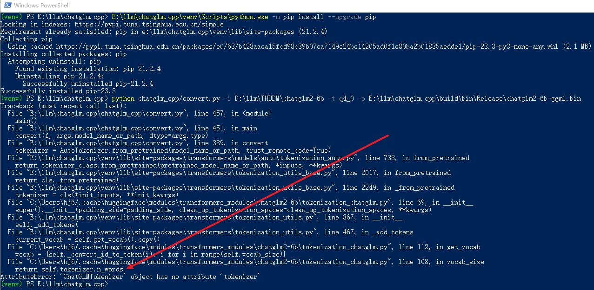
上面失败的经历你看了吗？没关系，这里才是重点。因为有了之前
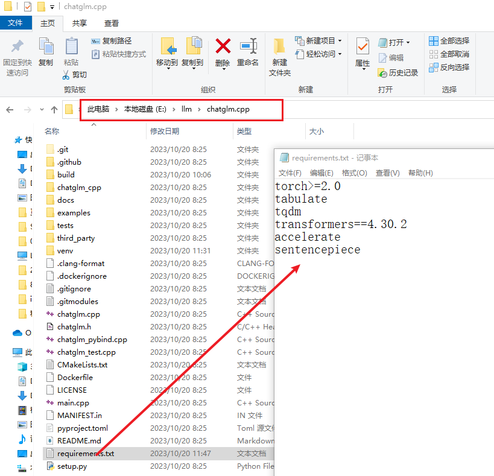
下面的两个命令都可以，视情况而定。
# 我这里设置全局的清华镜像源
pip install -r requirements.txt
# 如果你不想全局设置，也可以仅本次安装时使用镜像源
pip install -r requirements.txt -i https://pypi.tuna.tsinghua.edu.cn/simple
安装成功了，下面开始转换了，使用下面的命令：
python chatglm_cpp/convert.py -i D:\llm\THUDM\chatglm2-6b -t q4_0 -o E:\llm\chatglm.cpp\build\bin\Release\chatglm2-6b-ggml.bin
嗨皮不，必须的，成功了，哈哈！就是依赖类库的版本问题。是否成功，全靠碰……
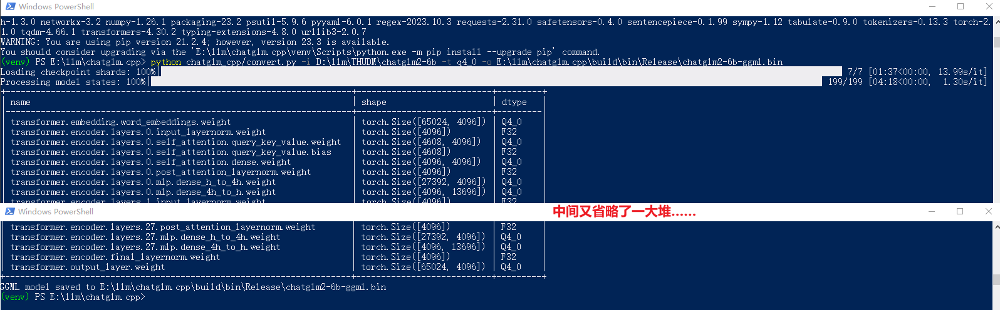
如果你熟悉
这里问了他两个问题：你好；javascript实现斐波那契数列。速度没的说啊！直接上截图（这个图很有内涵噢，你看见那速度了嘛，遥遥领先，遥遥领先，遥遥领先……）
# 更多参数的使用，还得多去官网逛逛啊
# 第一问
.\main.exe -m chatglm2-6b-ggml.bin -p 你好 --top_p 0.8 --temp 0.8
# 第二问
.\main.exe -m chatglm2-6b-ggml.bin -p javascript实现斐波那契数列
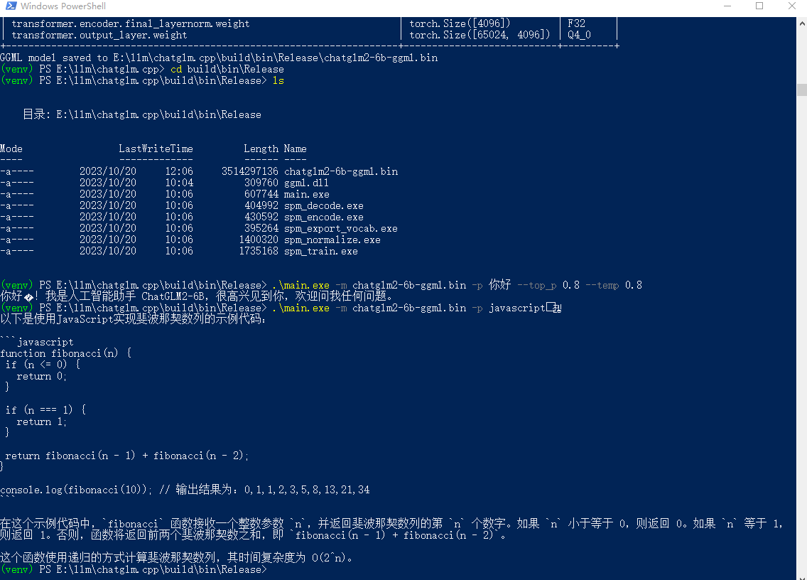